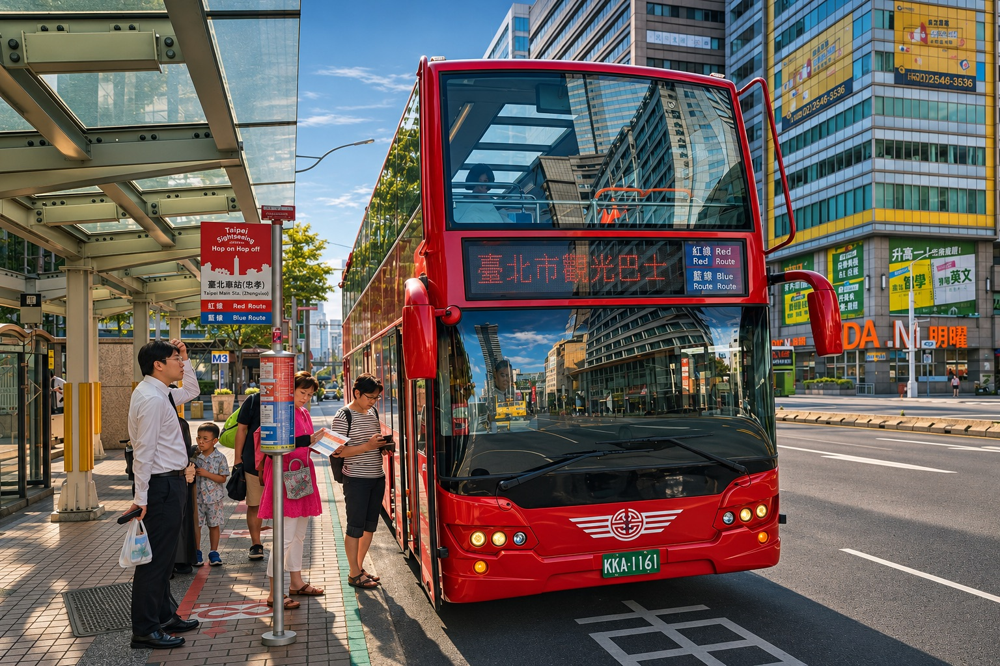
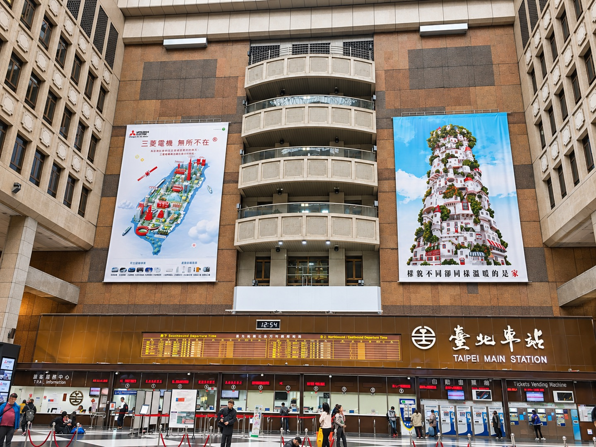
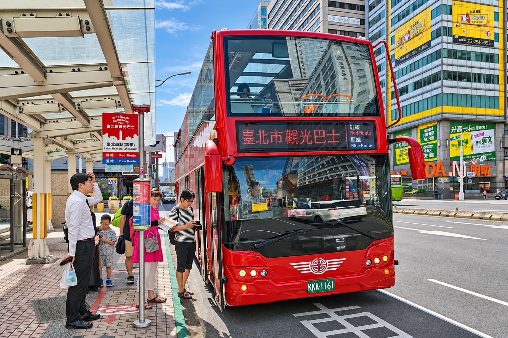

把品牌，帶進每一天。探索更多
一個窗口，
整座城市的可能。
你的受眾，
下一站在哪裡？
從通勤、旅行到休閒，
找到適合品牌出現的場域。

Taipei Main Station台北車站
讓品牌，成為旅程的起點。
高鐵、臺鐵、捷運與客運在這裡交會。沿著旅客動線配置燈箱、壁貼與大型版位，讓品牌走進往來的日常。
- 場域範圍
- 高鐵臺鐵台北站大廳與 B1
- 媒體形式
- 大型吊掛、燈箱、壁貼、數位屏幕
城市，就是
品牌的展場。
放大一個畫面，也延伸一段體驗。
從站內到街頭，看見媒體的不同尺度。
場域影像經 AI 優化，僅供設計與版位示意；非本公司新案例或成效證明。

從一個想法，
到真正被看見。
從提案做到上刊結案，
每個環節，都有同一個團隊接住。
洽談需求
了解品牌目標、預算與想曝光的地區。
提案報價
規劃媒體組合、路線與版位，提供費用建議。
排程製作
確認方案後，安排素材製作與上刊時程。
上刊執行
提供上刊照片與清冊，讓執行過程有據可查。
告訴我們，
你想讓誰看到。
從一個地區、一種媒體，
或一個還沒成形的想法開始。
設計提案示範：可整理並複製需求，
此頁不會送出或儲存個人資料。